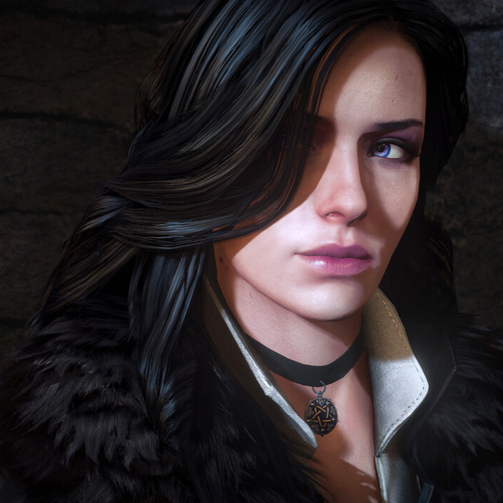

The cast
Geralt is one of gaming's most compelling protagonists, not because he is flashy or overpowered, but because he is tired. He is a man who has seen too much, done too much, and carries the weight of a world that largely despises him for what he is. Yet he keeps going, keeps helping, keeps making hard calls. That quiet humanity is what makes him so easy to root for.
The supporting cast is equally strong. A few standouts:
- Ciri — trying to survive while carrying a burden she never chose
- Yennefer — driven and complex, often hiding more than she shows
- Dandelion — lighthearted on the surface, but loyal and dependable when it matters
- The Bloody Baron — deeply flawed, with a past that's hard to ignore
These are not characters who exist to serve the plot. They have their own lives, their own agendas, and their own stories that play out regardless of what Geralt does. That sense of a living world full of real people is something very few games manage to pull off.

